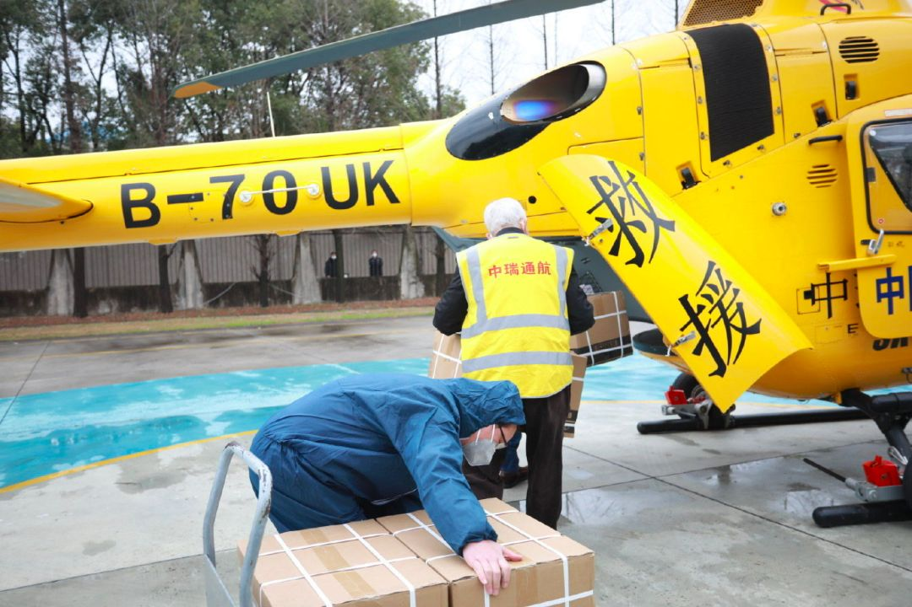
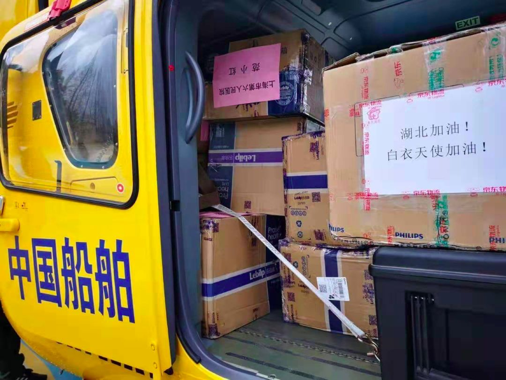
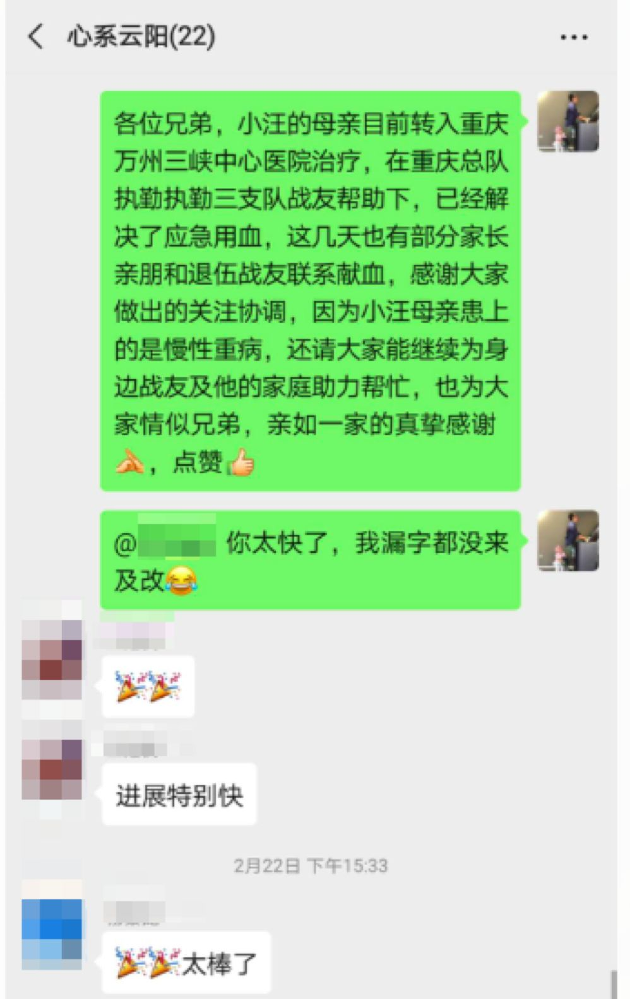
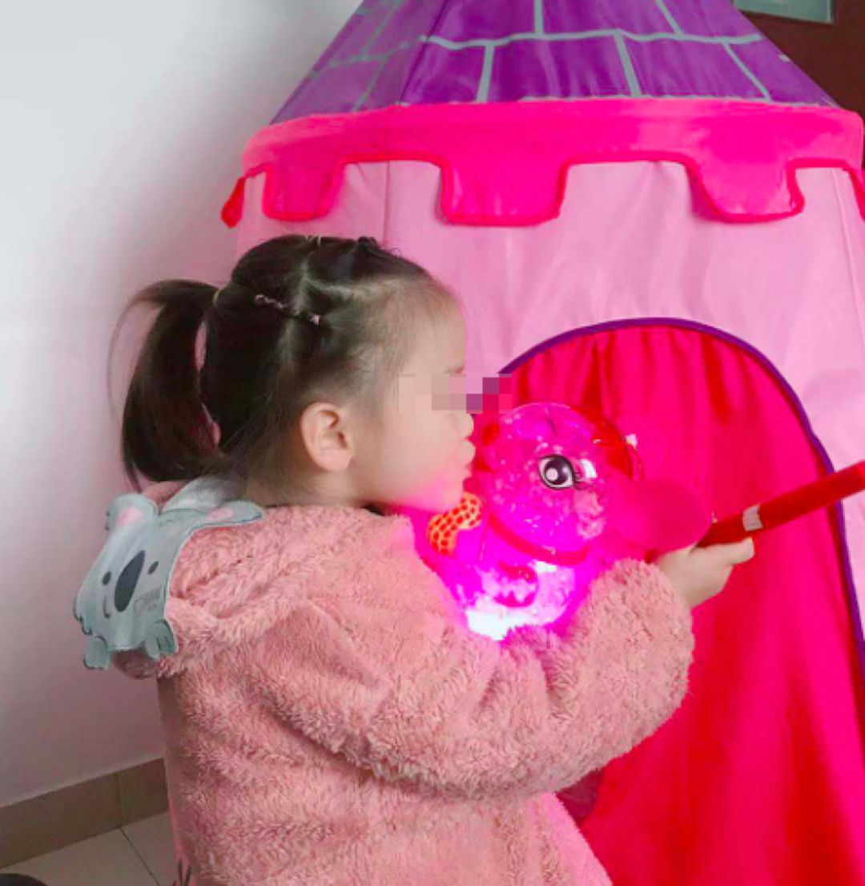

拯救武汉：实录封城后最艰难的三周 |《财经》封面
原文链接 备份链接 一座人口过千万的超级大都市在突降灾疫后陷入休克，然后艰难走出混乱无望 财经封面。创意设计/黎立 文 |《财经》特派武汉记者 刘以秦 信娜 王小《财经》记者 房宫一柳 黎诗韵 俞琴 王丽娜 王静仪 陈亮 李斯洋 李皙寅 …
我希望这些行为能够影响其他人也加入“管闲事”的行动中来，这既是一个党员应该做的，也是一个军人应有的担当。
口述 | 苏雨昕
整理 | 周 洁
这个春节过得和以往都不相同。
整个正月，我没能回家。倒不是因为我去过武汉，而是因为我的母亲和妻子，都在医院工作，尤其是我的妻子，她是医院老年病科的护士长，还要给医院隔离病区的护士姊妹们做心理辅导，她还第一时间报名了援鄂医疗队，如果上海需要再派医护人员，她就该出征了。
哦对了，我是上海武警的一名基层干部，我叫苏雨昕。没能和家人团聚的日子，下了班以后，我也不想闲着，因为家里人都在医院，我格外关心疫情的发展，也希望自己能够做点什么。
我相信这不是我一个人的想法，终于，我找到了一个机会。

接力完成的爱心捐赠
新冠肺炎疫情发生后，大多数人的目光都聚集到了武汉。不过，我对孝感的情况更为关心——我很久以前带过一个兵，他是孝感的，每次休假回来都给我们带孝感麻糖；我还记得他给我们科普，孝感之所以叫孝感，是因为东汉孝子董永卖身葬父、感天动地，孝字名不虚传。
湖北有我不少的战友，加上我家里人也是医院的，我想，总得做点什么吧？1月23日，小年夜，我在网上看到了一则求助信息——孝感第一人民医院缺物资，包括口罩、防护服等。
实际上，那会儿市面上个人已经买不到口罩和防护服了，但我想到他们可能会需要的一种物资——成人尿不湿。我的母亲曾经参与过非典的治疗，记得医护人员穿脱防护服非常费劲，而且长时间不吃不喝，也不能上厕所。
我找遍全网，终于找到一家还能发货的商家（仓库就在孝感），买了十大包寄过去，等我朋友第二天想再支援一点的时候，发现所有商家都不发货了。不过，因为这批成人尿不湿，我得以跟医院负责物资的冯主任搭上线，得知他们很缺呼吸机，我和朋友们决定凑个份子，一起买一台。为此事，我们建了一个微信群“同呼吸共命运”。
此前我曾参加过渐冻症患者相关的公益活动，认识了一位做呼吸机代理的朋友，上海好点子商贸有限公司(惠民康恩)的薛洪艳薛姐，通过她，我了解到疫情发生后呼吸机卖得很紧俏，她手里的现货也不多了，我要，她同意帮我留一台无创呼吸机，而且成本价卖给我。
筹到钱之后，我问她能不能直接发到湖北，她意识到原来我是想做捐赠，她跟我说，她也想捐，但是她运不进去，如果我能把机器运过去，她愿意把手里的货都拿出来。
我很兴奋，这意味着我们也许可以救更多的人了。但兴奋过后，怎么运进去，成了我下一个要克服的难题。我联系了几家快递公司，他们均表示无法配送到武汉，中国邮政当时还能送进去，而且负责人愿意免费帮我们配送，但他表示，不能保证时效。
我想到了生活在武汉的战友，虽然他在武汉做志愿者，但当时武汉和孝感的公路已经切断了，他爱莫能助。幸好，我另一个武汉的战友给我介绍了湖北省应急管理厅的工作人员，这位工作人员提供了一个重要消息：2月7日，上海有一架中国船舶的直升机将运载应急物资飞往武汉。

他还给了我物资运送负责人的联系方式，上海去武汉的难题就这样解决了。
接下来怎么去孝感呢？正好我们中队里有孝感籍的战士，我跟他联系后，他介绍了他的舅舅给我们，他舅舅家正好就在医院的附近，就这样，物资的捐赠链条，终于在几天时间内被我们捋顺了。
跟薛姐汇报了这个情况后，她特别惊讶也特别开心，原本她准备了三台机器，后来让她的同事搜遍了所有的库存，又找到两台，凑了5台机器，当时她已经回到东北老家，由她同事转交给我们。
第二天晚上，我们把这5台机器送到直升机停靠点，那地方很大，那天下的雨有些大。我想我永远会记得给我们带路的扫地阿姨的背影，她没穿雨衣，知道我们是来送物资的，骑着电瓶车给我们带路，身上都湿了。

因为是精密仪器，我们的物资被放在了最外侧
也因为那天下雨，直升机的运送延后了一天。2月8日，我们的呼吸机和其他物资一起到了武汉，武汉转运孝感的物资到了高速口以后，我们的呼吸机由战友的舅舅代表，直接捐到了医院。
后来我得知，当时医院只有6台呼吸机，但医院里有20多位重症病人，我们捐助的呼吸机可以说是恰逢其时，不仅令更多重症病人能够多拥有活下来的可能，医院的医生们也松了一口气。
在呼吸机的捐赠过程中，其实大部分人我都没有见过面，但疫情面前，我们每个人都愿意倾其所有作出自己的努力。其实我也想过放弃，但这么多跟我一起努力的人“同呼吸共命运”，终于让这件事成为可能，而我们实实在在地捐助，也终于给到孝感的医生和病人支撑下去的信心。

这件事成功后，给了我们很大的信心。得知新冠肺炎的患者会产生很多浓痰，我们原班人马又开始了新一轮的努力——这两天，薛姐正在联系国外的一种比较新型的吸痰机，这种机器原本也是应用于渐冻症患者，对于需要吸痰的患者或许可以起到作用；我和朋友则刚跟金银潭医院连上线，如果对接好需求，这批物资也将尽快成行。
部队里的“管闲事儿大王”
疫情期间，医疗资源真的挺紧张的。
我有心理咨询师的职业资格，所以在部队也会到基层去讲讲课，做些心理疏导。有一天我下去时，发现我们有个战士的心理状态很不对，我对此比较敏感，于是进一步了解了他的情况。
问了以后得知，这位战士的母亲确诊得了比较严重的血液疾病，但当地没有能力确诊，更别说医治了。战士的老家在重庆的云阳县，当地医疗力量比较薄弱，正好我家里的医生比较多，我就让他不要急，先把病情报告发给我，我来问问。
我的小姨是血液科的专家，我发给她看了以后，她跟我说大概率是再生性障碍贫血，这个病很凶险，相当于你的骨髓罢工了，不再制造新鲜的血液了，需要赶紧治疗。
当地医院显然不具备救治能力，一个它技术不够，另外一个它没有血。但这是一条生命啊，没有山穷水尽前，怎么能放弃呢？
后来，我们找到云阳和重庆中间的万州，万州有个三峡中心医院，经过争取后，对方医院同意接收我们战士的母亲。

由于我们战士是特困家庭，但这个病需要很多钱，我们又号召中队的党员捐款，先期筹集了一万多元，目前还在帮助他申请一些其他的救济项目。
我一直认为，很多心理问题的背后是有一个实际问题存在的，只有把实际问题解决，心理问题才能迎刃而解。当然，不是每次我们都能解决背后的实际问题，但对我来说，努力尝试过才能不愧于心。
不知道为什么，可能因为我从小就学钢琴、学架子鼓什么的，比较感性，碰到这些事儿，让我知道了，我就没法不去管，因为这，我们单位不少人都说我是“管闲事大王”，其实我也不是爱管闲事，我就是看到别人需要帮助，自己不出力不舒服。
前段时间我们同事的家属从湖北来看他，没想到刚来就出现了疫情，于是家属进入医学隔离，出不了门回不了家，情绪很不好，还跟同事闹别扭。我知道以后，趁着隔离期结束，带了一些零食去看望孩子，还带着一盏老鼠灯，这是我每年元宵都会给我闺女准备的玩具。

我一直希望我能够维护所有人对于美好的信任和向往，我的这些行为能够影响其他人也加入“管闲事”的行动中来，这既是一个党员应该做的，也是一个军人应有的担当。

征集令
《新民周刊》现面向全国征集新冠肺炎采访对象和真实故事：
如果你是参与抗击新冠肺炎疫情的医护人员或其家属，我们希望聆听你的“战疫”故事，也希望传达你的诉求。
如果你是确诊、疑似患者本人或家属，我们希望了解你和家人如何“抗疫”的过程，让外界了解你的真实经历。
如果你是疫情严重地区的普通市民，我们希望展现你的乐观，并倾听你所需的帮助。
如果你是公共服务人员或各类捐助者，我们希望看到你的“最美逆行”，记录下你的无私。
……
抗击新冠肺炎疫情，我们诚征对疫情了解的社会各界人士，提供相关线索，说出你的故事，让我们用新闻留存这一切。
《新民周刊》新冠肺炎线索征集值班编辑联系方式（添加时请简要自我介绍）：
周一：应 琛 微信号：paulineying0127
周二：金 姬 微信号：gepetta
周三：黄 祺 微信号：shewen-2020
周四：周 洁 微信号：asyouasyou
周五：孔冰欣 微信号：kbx875055141
周六：吴 雪 微信号：shyshine1105
周日：姜浩峰 微信号：jianggeladandong
✳如你需要捐赠物资，可与以下两位工作人员联系:王勇：WangYong-SH 吴轶君：rommy150708（添加时请注明“捐物资”，方便工作人员快速通过您的申请，谢谢。）
新闻是历史的底稿，你们是历史的见证者。期待你的故事、你的线索！

▼
大家还都在看这些
▼
新民周刊所有平台稿件， 未经正式授权
一律不得转载、出版、改编或进行
与新民周刊版权相关的其他行为，违者必究


原文链接 备份链接 一座人口过千万的超级大都市在突降灾疫后陷入休克，然后艰难走出混乱无望 财经封面。创意设计/黎立 文 |《财经》特派武汉记者 刘以秦 信娜 王小《财经》记者 房宫一柳 黎诗韵 俞琴 王丽娜 王静仪 陈亮 李斯洋 李皙寅 …
原文链接 备份链接 3月21日。 封城第59天。这么长时间了！ 昨天那么大的太阳，今天突然就阴了。下午还下了点雨。这时节的春雨，对于院子里的树以及花，都还是很需要的。前两三天，武大樱花盛开，树下空荡无人，估计是记者拍了一些照片，同学群里便 …
原文链接 备份链接 作者：北林 编辑：北林 特别不感谢：给阻止疫情制造麻烦的混蛋们 我听来了许多虚假的、不符合主流的、刻意制造矛盾的流言蜚语; 发这里是告诉大家: 不要相信，不要转发， 都是假的，不要去调查， 尤其是记者们，以下都是假 …
原文链接 备份链接 // “在清水里泡三次，在血水里浴三次，在碱水里煮三次，我们就会纯净得不能再纯净”。 托尔斯泰在《苦难的历程》中如此描述人们从革命走向胜利的艰辛过程，在此时，身处武汉的一线医务工作者又何尝不是经历着清水、碱水甚至血水 …
原文链接 备份链接 黄女士及其家人是如何“顺利完成进京全流程”的？当前是否存在更多的“黄女士”？这些令人疑惑的问题，有待一天之内即迅速成立的三个调查组，还公众合理合法的结论。 文 | 王仲昀 Anne 2月26日，北京发布的一例由武汉返京 …